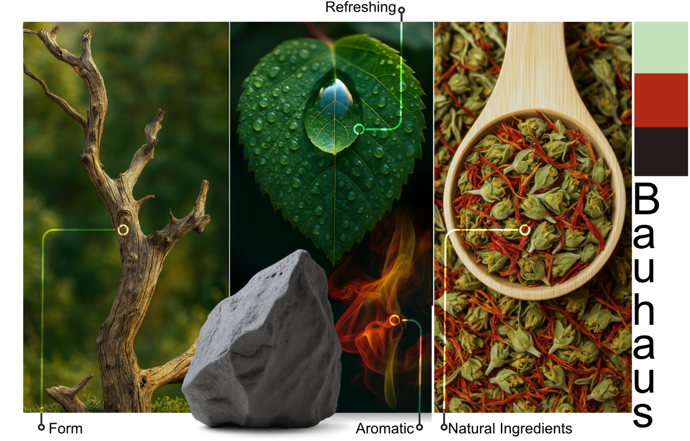
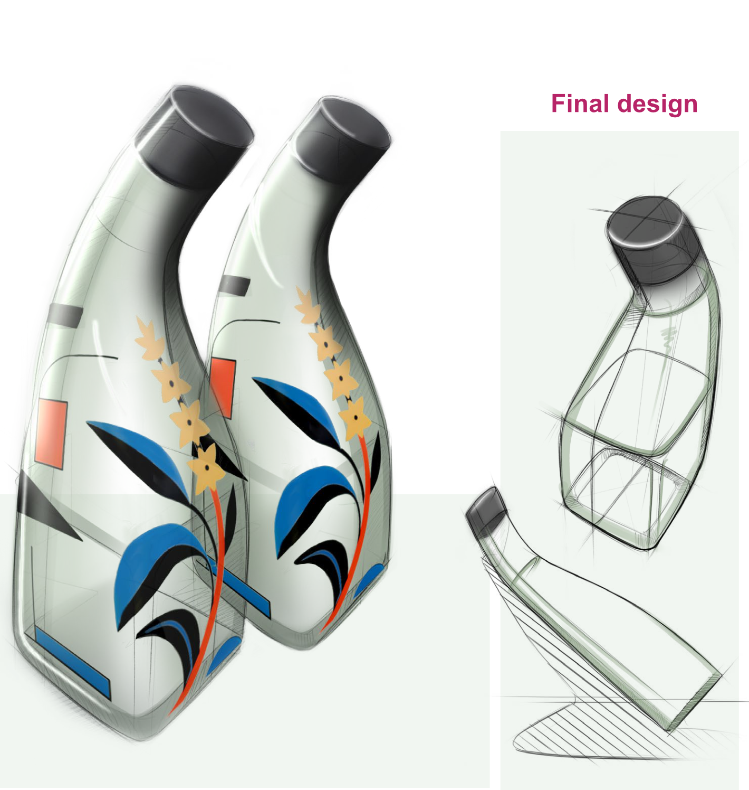
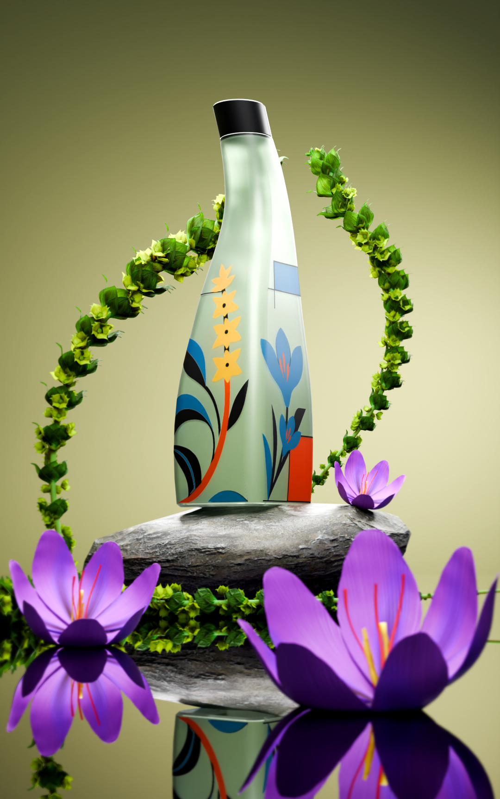

Tea Packaging.
“
A premium tea product packaging design which promotes the flavors of mountain tea/sideritis and Kozani saffron. The tea packging reflects its ingredients in a unique way.
The graphic design style is inspired by the Bauhaus artistic movement, therefore its colors follows the principles of the movement, namely, red, blue, yellow and black.
The curved, slightly dynamic shape of the bottle differs from classic designs and evokes a functional yet artistic form.


